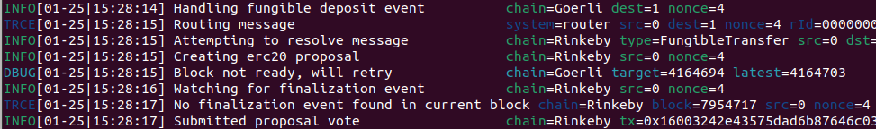
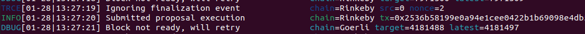

Deploying a Live EVM->EVM Token Bridge¶
This tutorial walks through the process of deploying a token exchange bridge between two Ethereum test networks (Görli and Rinkeby). It could similarly be applied to link any two EVM-based chains including the Ethereum mainnet.
At a high level setting up ChainBridge for token transfers requires the following:
- A token native to ChainA (e.g. TKN) and a destination token on ChainB which will represent the source token wrapped (e.g. wTKN)
- The ChainBridge bridge contract deployed to each chain
- Handler contracts on each chain to instruct the bridge what to do with the tokens
- One or more off-chain relayers running to pick up transactions from the source chain and relay them to the destination chain
Overview of Cross-chain Token Transfers¶
Tokens are inherently native to a single chain; however, with a bit of contract magic it is possible to make something equivalent to transferring value between two chains.
Lock-and-Mint | Burn-and-Release¶
This approach is appealing because it imposes very few requirements on the asset on the source chain other than it must be transferable and lockable in a contract. This makes it possible to use with native assets (e.g. ETH) or existing tokens that you don't control.
The basic flow of lock-and-mint is as follows:
- Assets on the source chain are deposited in a bridge contract which locks them up
- A relayer observes this transaction and sends a new transaction to the bridge contract on the destination chain. This transaction should include a proof of the deposit on the source chain and a destination which is owned by the depositor
- The bridge contract mints new tokens on the destination chain into the depositors account on this chain
It is important to notice that the total number of liquid (non-locked) tokens on both chains combined remains the same. Exchanging the tokens on the destination chain back to native tokens uses the inverse operation, burn-and-release.
- Tokens on the destination chain are sent to a bridge contract which burns them
- A relayer observes this transaction and sends a new transaction to the bridge contract on the source chain. This transaction should include a proof of the burn and a destination address
- The bridge contract unlocks some number of tokens and deposits them into the destination account
Provided this refunding of tokens can be executed at any time and the number of locked tokens is always equal to the number of minted wrapped tokens, then we can say that the wrapped tokens have value equal to the original asset.
ChainBridge Components¶
A ChainBridge deployment on EVM-based chains requires the following components:
Bridge Contract¶
The bridge contract must be deployed on both the source and destination chains. Its primary task on the source chain is to broker token deposits (ensure they are locked) and emit the events that the relayers listen for. On the destination chain, the bridge contract is responsible for managing a set of permissioned relayers, aggregating relayer votes on proposals passed from the source chain, and executing the desired action (e.g. minting tokens) on the destination chain when the vote threshold is reached.
Handlers¶
To allow extensibility the bridge contract is written to call functions in a handler contract when tokens are deposited on the source chain or when a proposal is approved on the destination chain. Each resource (e.g. token) can have a unique handler. You are free to write your own handler contract that implements any functionality you like.
The ERC20 handler contract that ships with ChainBridge can be configured to either lock up the tokens or burn them (if the token allows) on deposit and either mint or release tokens when a proposal is executed. A single handler can handle many tokens but their contract addresses must be registered with the handler ahead of time.
Relayers¶
The relayer is an off-chain actor that listens for particular events on the source chain and- when certain conditions are met- will submit signed proposals to the destination chain. The addresses of the approved relayers must be registered with the bridge contract on the destination chain.
Once a proposal has sufficient votes a relayer can execute the proposal to trigger the handler.
Deploying your own bridge¶
Preparation¶
Accounts¶
If you want to follow along with this guide we will be deploying a bridge between two Ethereum test networks (Görli and Rinkeby).
You will need one account on each network from which to deploy the contracts. These can be easily created using MetaMask. Be careful to use test accounts only as some of the commands in this tutorial require access to your private key.
This will cost gas so some test ETH will be required. So first up grab some test ether from the faucets:
- https://goerli-faucet.slock.it/
- https://faucet.rinkeby.io/
You will need around 0.1 each of Goerli ETH and Rinkeby ETH.
We will be creating a bridge that wraps the test ERC20 token WEENUS on Görli as a wrapped version (wWEENUS) on Rinkeby. So also grab some free WEENUS tokens by sending a 0 ETH transaction to the contract address on Görli: 0xaFF4481D10270F50f203E0763e2597776068CBc5
Tooling¶
We will be using the ChainBridge contract CLI to deploy and interact with the contracts. Grab and install the CLI by running:
git clone -b v1.0.0 --depth 1 https://github.com/ChainSafe/chainbridge-deploy \
&& cd chainbridge-deploy/cb-sol-cli \
&& npm install \
&& make install
This will also download and build the required Solidity contracts.
To avoid duplication in the subsequent commands set the following env vars in your shell:
SRC_GATEWAY=https://goerli-light.eth.linkpool.io/
DST_GATEWAY=https://rinkeby-light.eth.linkpool.io/
SRC_ADDR="<Your public key on Görli>"
SRC_PK="<your private key on Görli>"
DST_ADDR="<Your public key on Rinkeby>"
DST_PK="<your private key on Rinkeby>"
SRC_TOKEN="0xaFF4481D10270F50f203E0763e2597776068CBc5"
RESOURCE_ID="0x000000000000000000000000000000c76ebe4a02bbc34786d860b355f5a5ce00"
You could also write the above to a file (e.g. chainbridge-vars) and load it into your shell by running set -a; source ./chainbridge-vars; set +a.
You can use MetaMask to generate new accounts on the test networks and export your public and private keys.
Additional env vars are required to be set throughout the tutorial. If a command doesn't work be sure you have set the required variables.
Steps¶
1. Deploy contracts on Source (Görli)¶
The following command will deploy the bridge contract and ERC20 handler contract on the source.
cb-sol-cli --url $SRC_GATEWAY --privateKey $SRC_PK --gasPrice 10000000000 deploy \
--bridge --erc20Handler \
--relayers $SRC_ADDR \
--relayerThreshold 1\
--chainId 0
Take note of the output of the above command and assign the following variables.
SRC_BRIDGE="<resulting bridge contract address>"
SRC_HANDLER="<resulting erc20 handler contract address>"
2. Configure contracts on Source¶
The following registers the WEENUS token as a resource with a bridge contract and configures which handler to use.
cb-sol-cli --url $SRC_GATEWAY --privateKey $SRC_PK --gasPrice 10000000000 bridge register-resource \
--bridge $SRC_BRIDGE \
--handler $SRC_HANDLER \
--resourceId $RESOURCE_ID \
--targetContract $SRC_TOKEN
Note: Sometimes the transaction confirmation will not be detected by the CLI. You can check the txhash in etherscan to see if it has been confirmed.
3. Deploy contracts on Destination (Rinkeby)¶
The following command deploys the bridge contract, handler and a new ERC20 contract (wWEENUS) on the destination chain. It also configures your account as a verified relayer.
cb-sol-cli --url $DST_GATEWAY --privateKey $DST_PK --gasPrice 10000000000 deploy\
--bridge --erc20 --erc20Handler \
--relayers $DST_ADDR \
--relayerThreshold 1 \
--chainId 1
Again, assign the following env variables.
DST_BRIDGE="<resulting bridge contract address>"
DST_HANDLER="<resulting erc20 handler contract address>"
DST_TOKEN="<resulting erc20 token address>"
4. Configure contracts on Destination¶
The following registers the new token (wWEENUS) as a resource on the bridge similar to the above.
cb-sol-cli --url $DST_GATEWAY --privateKey $DST_PK --gasPrice 10000000000 bridge register-resource \
--bridge $DST_BRIDGE \
--handler $DST_HANDLER \
--resourceId $RESOURCE_ID \
--targetContract $DST_TOKEN
The following registers the token as mintable/burnable on the bridge.
cb-sol-cli --url $DST_GATEWAY --privateKey $DST_PK --gasPrice 10000000000 bridge set-burn \
--bridge $DST_BRIDGE \
--handler $DST_HANDLER \
--tokenContract $DST_TOKEN
The following gives permission for the handler to mint new wWEENUS tokens.
cb-sol-cli --url $DST_GATEWAY --privateKey $DST_PK --gasPrice 10000000000 erc20 add-minter \
--minter $DST_HANDLER \
--erc20Address $DST_TOKEN
Create a Relayer¶
With the above complete, the Ethereum side of the setup is finished. The only missing piece is a relayer to detect events on the source chain and submit them as proposals on the destination chain.
In configuring the destination bridge contract we set the relayer threshold to 1, meaning only a single relayer must vote on a proposal for it to be approved. This is OK for testing but in practice a much larger set of relayers should be used with a suitable high threshold to make collusion difficult.
1. Build the relayer¶
git clone -b v1.1.1 --depth 1 https://github.com/ChainSafe/chainbridge \
&& cd chainbridge \
&& make build
2. Author a config¶
Execute the command below to create a config file with all the variables assigned in previous steps.
echo "{
\"chains\": [
{
\"name\": \"Goerli\",
\"type\": \"ethereum\",
\"id\": \"0\",
\"endpoint\": \"wss://goerli-light.eth.linkpool.io/ws\",
\"from\": \"$SRC_ADDR\",
\"opts\": {
\"bridge\": \"$SRC_BRIDGE\",
\"erc20Handler\": \"$SRC_HANDLER\",
\"genericHandler\": \"$SRC_HANDLER\",
\"gasLimit\": \"1000000\",
\"maxGasPrice\": \"10000000000\"
}
},
{
\"name\": \"Rinkeby\",
\"type\": \"ethereum\",
\"id\": \"1\",
\"endpoint\": \"wss://rinkeby-light.eth.linkpool.io/ws\",
\"from\": \"$DST_ADDR\",
\"opts\": {
\"bridge\": \"$DST_BRIDGE\",
\"erc20Handler\": \"$DST_HANDLER\",
\"genericHandler\": \"$DST_HANDLER\",
\"gasLimit\": \"1000000\",
\"maxGasPrice\": \"10000000000\"
}
}
]
}" >> config.json
3. Set up keys¶
The relayer maintains its own keystore. To add a new account on the source and destination chains run:
./build/chainbridge accounts import --privateKey $SRC_PK
./build/chainbridge accounts import --privateKey $DST_PK
Note: The second command might fail if you are using the same keys on both networks. That's OK just keep going
Lets test our bridge!¶
First start the relayer by running:
./build/chainbridge --config config.json --verbosity trace --latest
The latest flag ensures that the relayer starts monitoring blocks from the most recent it can find and won't attempt to look through the history. Leave the relay running in a seperate shell while you run the commands below.
Approve the handler to spend tokens on our behalf (to transfer them to the token safe).
cb-sol-cli --url $SRC_GATEWAY --privateKey $SRC_PK --gasPrice 10000000000 erc20 approve \
--amount 100 \
--erc20Address $SRC_TOKEN \
--recipient $SRC_HANDLER
Note: Most ERC20 contracts use 18 decimal places. The amount specified will be encoded with the necessary decimal places. This can be configured with --decimals on the erc20 command.
Execute a deposit.
cb-sol-cli --url $SRC_GATEWAY --privateKey $SRC_PK --gasPrice 10000000000 erc20 deposit \
--amount 100 \
--dest 1 \
--bridge $SRC_BRIDGE \
--recipient $DST_ADDR \
--resourceId $RESOURCE_ID
The relayer will wait 10 block confirmations before submitting a request which may take a few minutes on the test network. Keep an eye on the target=XXXX output in the chainbridge relayer window. The transfer will occur when this reaches the block height of the deposit transaction.
The relayer will show something similar to the below when it picks up a transaction and relays it. 
Some time later it will execute the proposal on the destination chain.

When checking your balance for the token on the destination chain you should see the inbound tokens from the handler.
Proposals will continue to be forwarded provided you keep the relayer process running.
And back again!¶
The bridge we've created already supports bi-directional transactions. We can submit a transaction to move tokens back from the destination to the source.
Approve the handler on the destination chain to move tokens on our behalf (to burn them).
cb-sol-cli --url $DST_GATEWAY --privateKey $DST_PK --gasPrice 10000000000 erc20 approve \
--amount 1000000000000000000 \
--erc20Address $DST_TOKEN \
--recipient $DST_HANDLER
Transfer the wrapped tokens back to the bridge. This should result in the locked tokens being freed on the source chain and returned to your account.
cb-sol-cli --url $DST_GATEWAY --privateKey $DST_PK --gasPrice 10000000000 erc20 deposit \
--amount 1000000000000000000 \
--dest 0 \
--bridge $DST_BRIDGE \
--recipient $SRC_ADDR \
--resourceId $RESOURCE_ID
Closing thoughts¶
It is also simple to extend the above to work with non-fungible assets (e.g. ERC721) by deploying another handler contract and reconfiguring the bridge.
Of course having a single relayer is a highly centralised way to be running the bridge. With additional calls to add-relayer it is easy to set up extra accounts that can relay simultaneuosly. Once there are plenty of relayers you can increase the vote threshold so that a certain number of relayers need to agree on a proposal before it is executed.
Read the documentation for the CLI tool to see how the bridge contract and handlers can be configured for different scenarios.